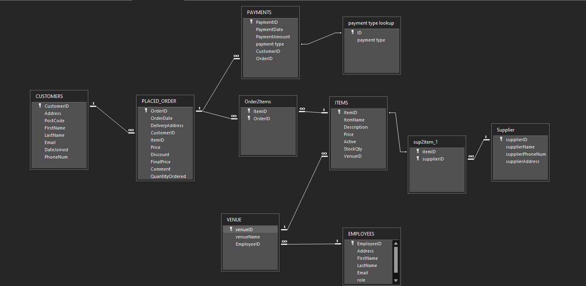
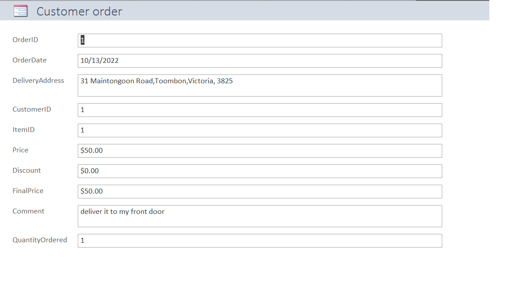
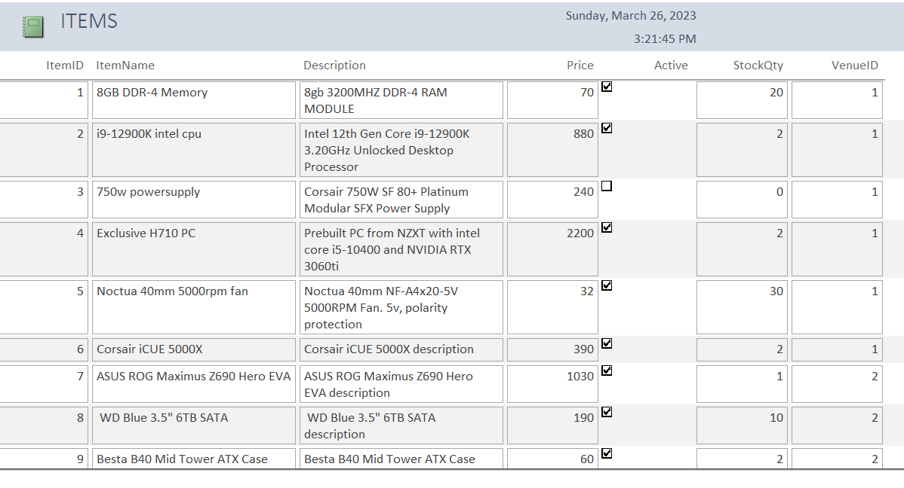
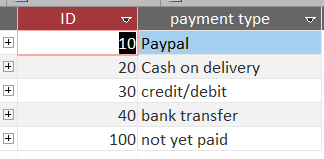
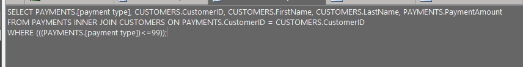

I started this project on the 10th of July and took me roughly a month to complete mainly due to me being occupied with Uni work. I used Microsoft Access due to its easy to understand
GUI and that it is a good starting point to learn about databases. I learned how to write in SQL and this project taught me a lot about how
businesses may use a databse to manage their stocks and other important information that they may want to keep track of, such as their employees, suppliers, etc.
Shown below is the ERD diagram that I created:

I learned a lot about how (primarily SME's) may use something like Access or a similar software to manage their stores to keep track of things
I also learned about the relationships different departments of the store may have, such as one to one, one to many, and so on.
I created 4 queries that I believed to be important for a business to operate. Queries such as:
I felt like these are important things to consider as the first query ensures the customer has paid therefore we can deliver the items, and the query for old customers
may be important as it could create a loyalty program for the customer, keeping customer retention high. Having less than 10 in stock may mean that we need to order some as to not suffer a shortage
and disappoint our customers
I created 3 forms for the employee to fill out to update the database with either customer orders, employee details, and/or stock levels.
An example of what a form for a customers order may look like is shown:

Having forms is important as it simplifies the process of filling out information as inputting data in SQL form may not be the best and inputting it by pen and paper would be the second-worst way of inputting data for record keeping in the digital world.
Lastly, I created 3 reports that showcase the customers orders, employees, and stock levels. The reason why I chose to create reports is because it makes things more readable and it organizes things into a clear and understandable manner. It would also be possible
to print these reports and this would be beneficial to people in higher up positions such as CEO's who may not care or understand all the
complex code language, but would rather see / have something that is more clear to understand. An example of a report that I made is the ITEMS report, which
lists out the items that are available in stock, along with their prices and what venue they are in as I envisioned this store to be a retail chain and have
many stores situated across the country.

Although basic, I got hands on experience with writing actual SQL code to manipulate some data and make it look better. I wrote it for the customers who have paid. I made a couple payment methods for Access to refer to. Payment methods such as
paypal,cash on delivery,credit/debit, bank transfer, and not yet paid. Each customer will have their own way of payment and each payment type has its own ID

The process will only begin once the payment has been made (so anything under ID value 100). This is evident in the way I programmed it in SQL as shown below.

Overall, this project taught me a lot about how businesses operate and how to create a database for a company. It also taught me about the
basics of SQL and how to manipulate data with it. I really enjoyed exploring this area as it taught me a lot of new things that I could potentially
use in the real world one day.